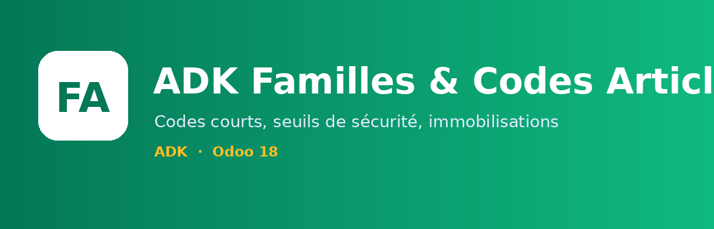
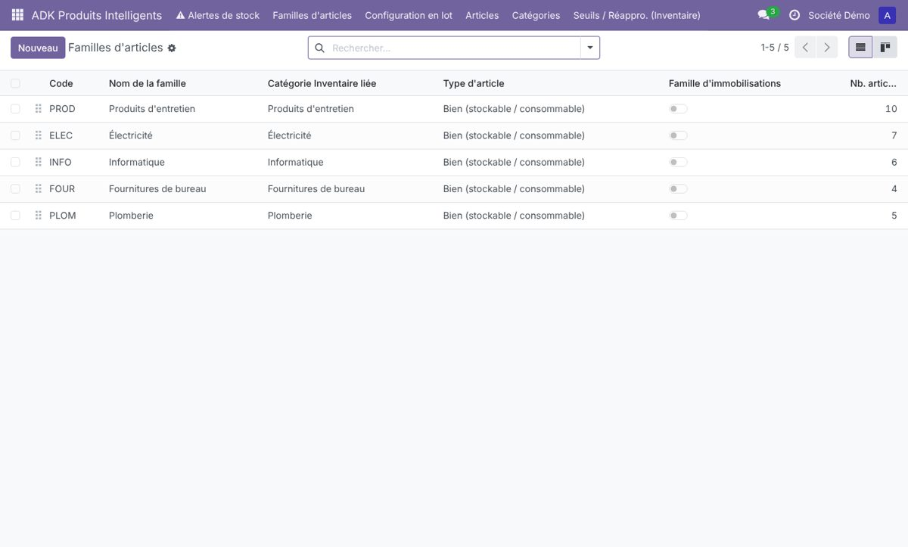
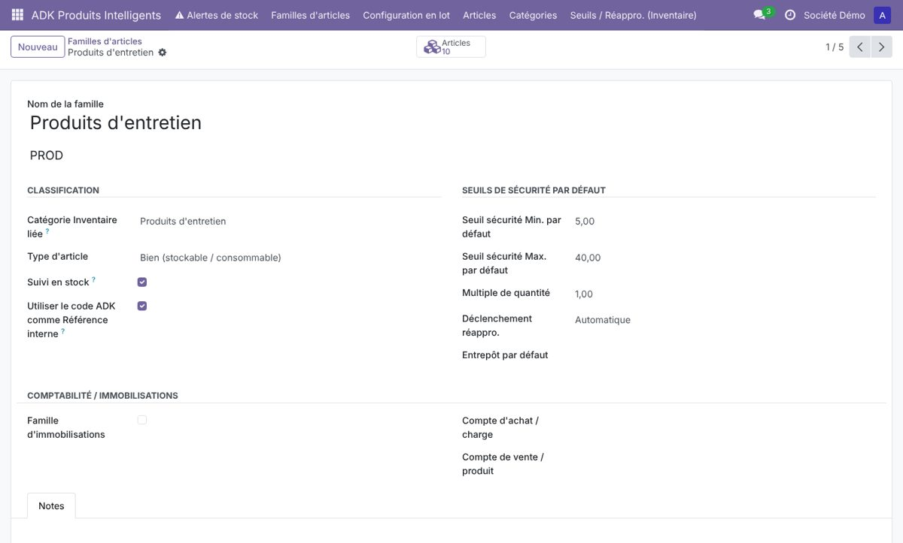
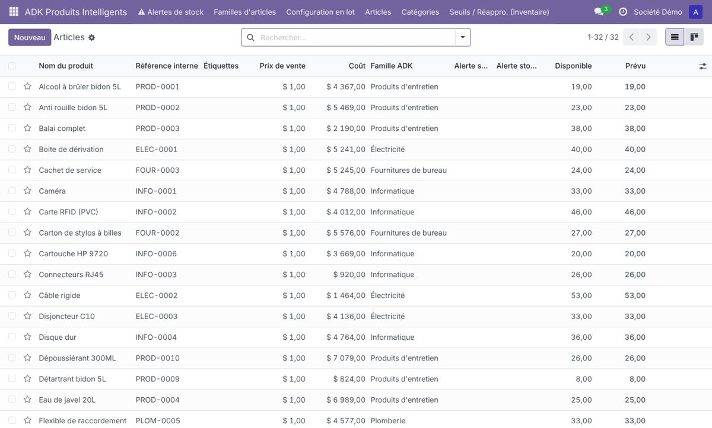
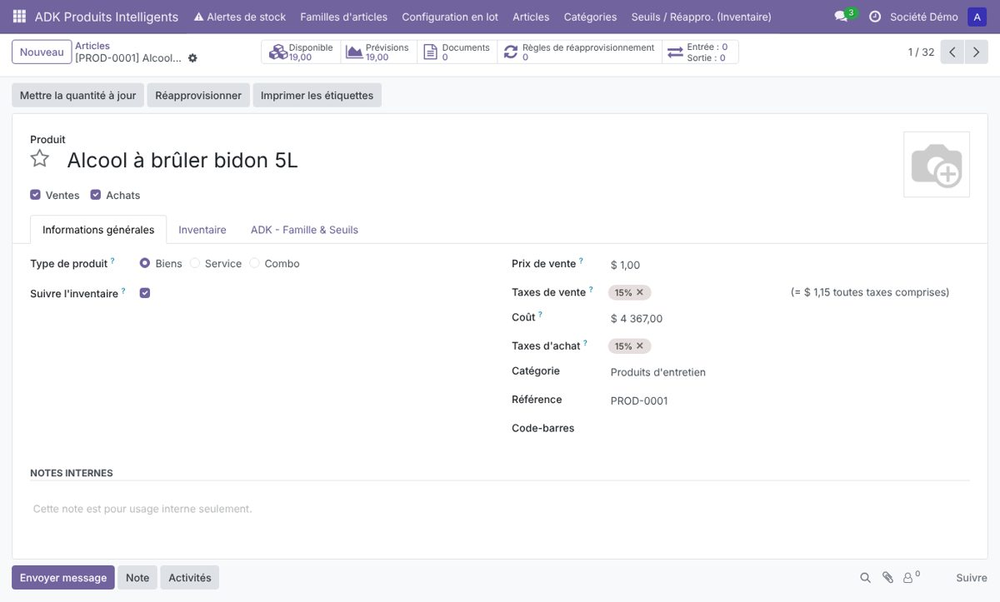
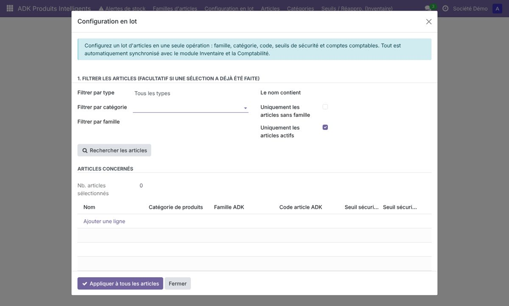
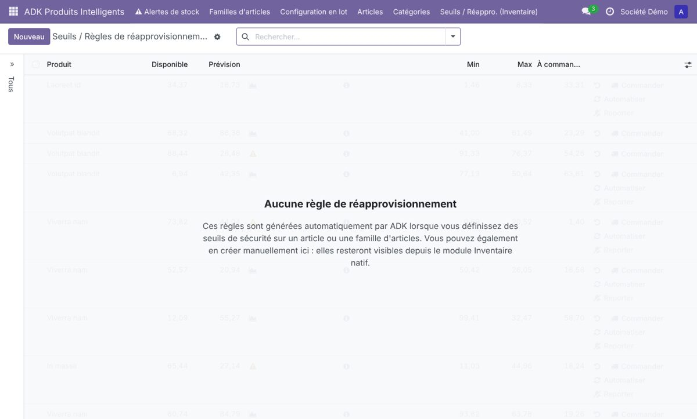

Organisez vos articles par famille, avec des codes courts (ELEC-0001), des seuils de sécurité synchronisés avec l’Inventaire et des comptes comptables par famille.
1 | Installer le module |
Il complète les articles natifs d’Odoo, sans les dupliquer.
1 | Copiez le dossier adk_product_intelligent dans vos addons et redémarrez Odoo. |
2 | Applications ▸ Mettre à jour la liste, cherchez ADK Familles & Codes Articles ▸ Activer (dépend de Produits, Inventaire et Facturation). |
3 | Le menu ADK Produits apparaît dans la barre principale. |
2 | Créer une famille |
Un nom, un code court : le reste se déduit.
Une famille regroupe des articles de même nature : Électricité, Informatique, Entretien… Elle porte la catégorie Inventaire, le type d’article, les comptes comptables et les seuils par défaut.

1 | ADK Produits ▸ Familles d’articles ▸ Nouveau : saisissez seulement le nom. |
2 | Le code est proposé automatiquement (« Électricité » → ELEC) ; vous pouvez le modifier : 2 à 6 lettres ou chiffres, en majuscules. |
3 | La catégorie Inventaire est créée toute seule si vous n’en choisissez pas. |
4 | Renseignez au besoin les seuils par défaut, le compte d’achat, le compte de vente et l’option Immobilisation. |

3 | Des codes courts et lisibles |
Fini les références interminables.
| Élément | Format | Exemple |
|---|---|---|
| Code famille | 2 à 6 caractères, unique par société | ELEC |
| Code article | CODE-0001, numérotation propre à chaque famille | ELEC-0001, ELEC-0002… |
| Référence interne | Reprend automatiquement le code article (option par article) | ELEC-0003 |
4 | Classer les articles |
Famille, code, seuils et comptes dans la fiche article native.

Choisissez la famille dans la fiche article : la catégorie, le type, les comptes et les seuils se remplissent, et le code est généré à l’enregistrement.

Filtres de recherche utiles : Alerte de seuil, Immobilisations, Sans famille ADK, Sans code ADK, groupement par famille.
5 | Configuration en lot |
Classer des centaines d’articles en quelques clics.
1 | Dans la liste des articles, cochez les lignes (ou utilisez ADK Produits ▸ Configuration en lot avec des filtres : type, catégorie, famille, nom). |
2 | Choisissez ce qu’il faut appliquer : famille, catégorie, codes, seuils, immobilisation, comptes. |
3 | Validez : tout est synchronisé avec l’Inventaire et la Comptabilité. |

6 | Seuils de sécurité et réapprovisionnement |
Un seuil saisi ici devient une règle native d’Inventaire.
Les seuils Min. et Max. de l’article créent ou mettent à jour la règle de réapprovisionnement d’Odoo (entrepôt, multiple, déclenchement). Rien n’est dupliqué : vous retrouvez la règle dans Inventaire ▸ Réapprovisionnement. Les articles sous leur seuil sont signalés par une alerte.

7 | Comptabilité et immobilisations |
Comptes d’achat et de vente appliqués à l’article.
| Option | Effet |
|---|---|
| Compte d’achat / de vente | Reporté sur les comptes natifs de l’article (charge et produit). |
| Immobilisation | Le compte d’immobilisation remplace le compte de charge à l’achat. |
| Au niveau de la famille | Tous les nouveaux articles de la famille héritent des comptes. |
8 | Ce qui a changé dans la version 18.0.2 |
Plus simple, plus propre.
| Avant | Maintenant |
|---|---|
| Code famille FAM0001 sur une séquence globale | Code court choisi par vous (ELEC) |
| Articles FAM0001/0005 | ELEC-0005 |
| Préfixe libre en plus du code | Un seul code, pas de doublon |
| Message dans le chatter à chaque synchronisation | Seules les erreurs sont tracées |
| Catégorie obligatoire | Créée automatiquement |
Une question, un besoin d’évolution ? Écrivez à Kambeu Henang Ange Duval : duvalkambeu61@gmail.com.
| Information | Détail |
|---|---|
| Version Odoo | 18.0 (Community et Enterprise) |
| Licence | LGPL-3 |
| Éditeur | ADK |
| Mise à jour | Sauvegardez votre base, remplacez le dossier du module, redémarrez Odoo puis Applications ▸ Mettre à jour. |